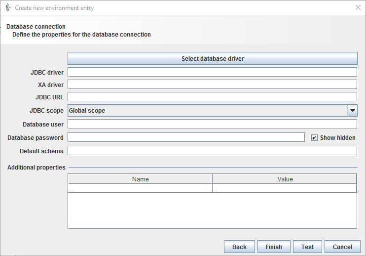

Database connection

Topic content
Description
Database connection Environment entries are used to declare the parameter to access a database. They define a connection between Orchestra and a database.
Purpose of object
It is e.g. used by the channels Database BLOB Reader Database Outbound Database Reader Database Source Reader Database Target Database Listener to declare the database to use.
Configuration

Step by Step
Using predefined database
1.Create an Environment entry of type database connection.
2.Click on button and choose the database type to use. If the intended database isn´t listed look at section "Using not predefined databases"
3.The fields , and JDBC URL are filled automatically.
4.Replace all parameter marked by < > with the required information.
5.Select JDBC scope if necessary:
o: Orchestra just looks in its lib directory for the jdbc driver. This option is set by default and shouldn't be changed in usual cases.
o: Orchestra first looks in external archive for the jdbc driver before searching in its lib directory. This should just be used if you want to use a special driver, e.g if another version of the driver is needed from external archives.
6.Enter and password of the database user.
7.Optionally: Choose a of the database. In case of Oracle this is typically the same as the username; in case of MySQL this is typically the name of the database.
8.Automatically: Additional properties is filled usually automatically with properties for the XA driver.
9.Click : An info window will appear, which shows whether the test of the connection was successful.
10.If the test was successful click on .
Using not predefined database
1.To use a not predefined database the fitting JDBC driver is necessary. Get the appropriate library for your database. Now two options are possible:
o Copy the jar-file in your_directory/Orchestra/WEB-INF/lib directory.
oLoad the jar file as external archive, type Standard Java Archive as scenario library.
2.Create an Environment entry of type database connection.
1.Fill in the of the using database, e.g. for Sybase: com.sybase.jdbc2.jdbc.SybDriver
2.Add a random value in field to satisfy the dialog. This declaration is just necessary in case of distributed transactions(e.g. one statement for two databases)
3. Add the of the database to use, e.g. Sybase: jdbc:sybase:Tds:<host>:<port>?ServiceName=<DBNAME>
4.Replace all parameter marked by < > with the required information.
5.Select JDBC scope depending on the way you integrated the drivers jar file:
oCopied in lib directory: select Orchestra just looks in his archive and will find the fitting driver.
oIntegrated as scenario library: select: Orchestra first looks in external archive for the jdbc driver and will find the driver, because you imported it.
6.Follow step 6 to 9 of step by step guide using predefined database